Saint Louis, Missouri
Born and raised in St. Louis, MO!!!! I went to public school and graduated from Vashon High School and Health Careers High School within a dual enrollment program. I played several sports, including basketball, tennis, and I was in the band.
Orlando, Florida
I enlisted in the United States Navy and was introduced to boot camp at Orlando Navy Base. I was there two years learning to be a Torpedoman’s Mate and I played basketball for the base team.
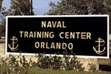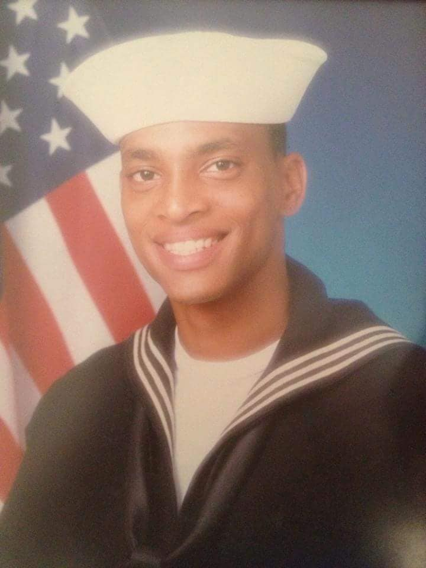Brunswick, Maine
My first duty assignment was at NAS Brunswick, Maine in the weapons department. I also played on the base basketball team there winning two basketball league championships and one MVP. It was here in Brunswick that I was selected to the All-Navy Basketball team.
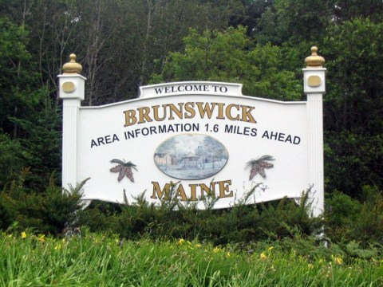Saint Louis, Missouri
Home Sweet Home!!!! I started my first business in 1995 with Midwest Cellular & Paging. I sold the business and headed south to start my second profession in sports.
Orlando, Florida
I’M BACK!!! In 1998, I enrolled in the Golf Academy of the South to learn how to operate and manage golf courses and earn my Professional Golfers Association (PGA) certification. Played golf with the greats to name a few, Tiger Woods, Arnold Palmer, Jack Nicklaus, Julius Erving, and Negro League Player/Manager Buck O’Neal. I also caddied at Bay Hill Golf Course to pay my rent. LOL
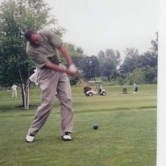Saint Louis, Missouri
After my stint in Orlando, FL, I was officially a PGA golf pro working at Forest Park as the teaching professional. I founded the St. Louis Minority Youth Golf Association (StLMYGA) in 2000. The youth golf program was the largest in the city and grew to be notable. StLMYGA merged with the PGA forming the First Tee Golf Program located in Forest Park. Proud to be the founder of that program with a legacy I hope keeps going.
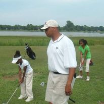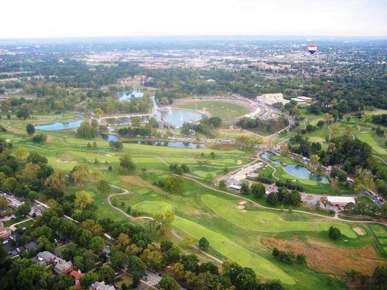 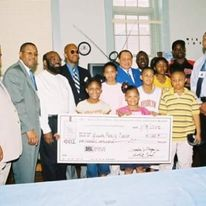Reading, Pennsylvania
While living in Reading, I worked for Sunoco Logistics, as a pipeline controller. When I wasn’t working long twelve hour shifts, I was traveling the east coast taking in every city culture and customs. Some of the cities visited includes New York, Philadelphia, Newport, RI, Portland, ME, Washington, DC, Atlantic City, NJ, Baltimore, MD. The Reading Pagoda, a historic landmark built in 1908, is owned by the City of Reading, Pennsylvania. A symbol of the city for more than a Century, the Pagoda is anchored to the mountainside atop the south end of Mount Penn.
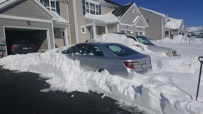 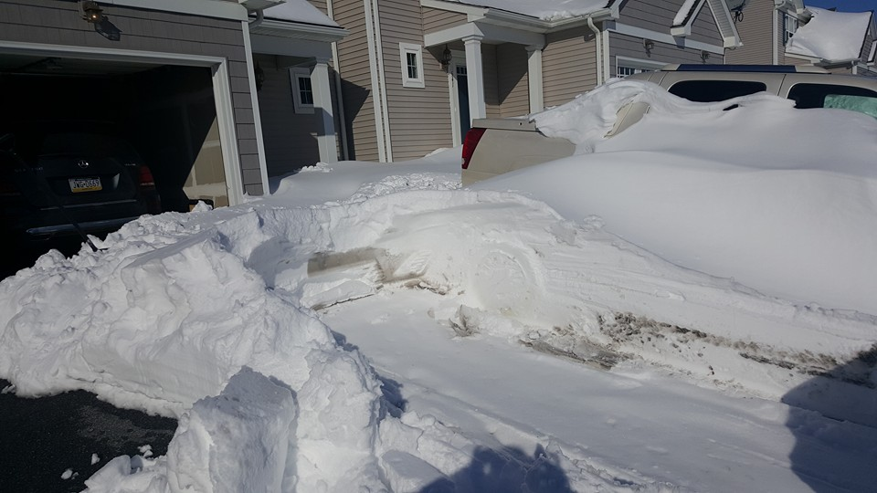Saint Louis, Missouri
Back in St. Louis, I was privileged to have the honor of working at my old high school Vashon as a Dean of students. Touching young minds and seeing them succeed through high school gave me immense pride and joy. I worked as a firefighter with the City of St. Louis, and I started my second business venture with a bar/restaurant located in South St. Louis named Infinity Blue in honor of my fraternity Phi Beta Sigma. Finally I am studying to be a coding assassin with the help of Launchcode experts. After the code camp, I hope to represent Launchcode well in the future.
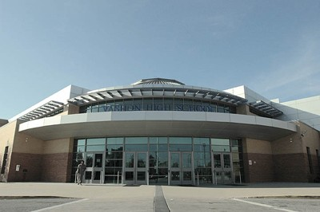 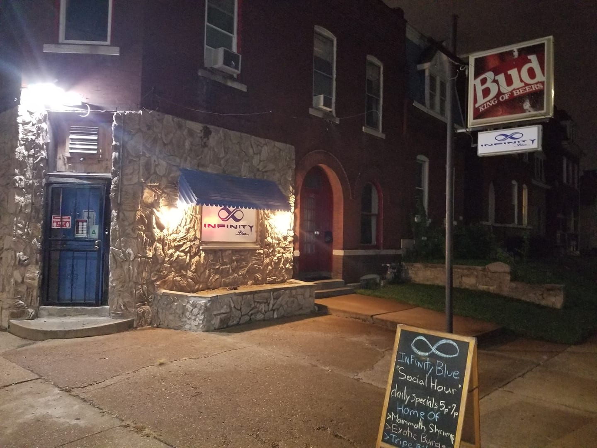